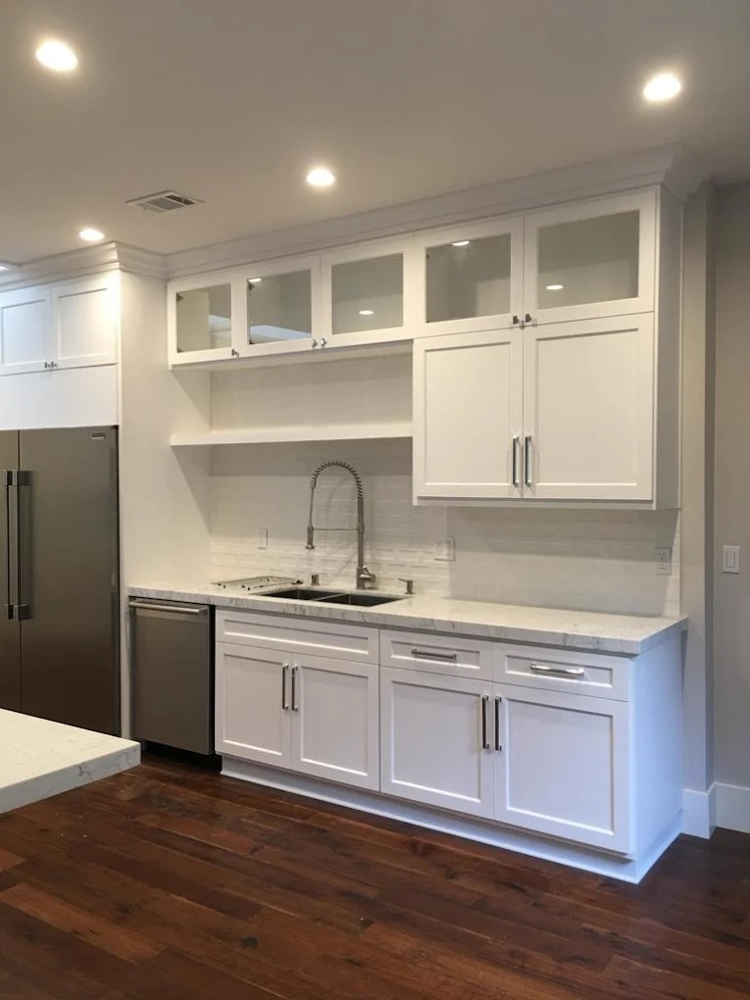
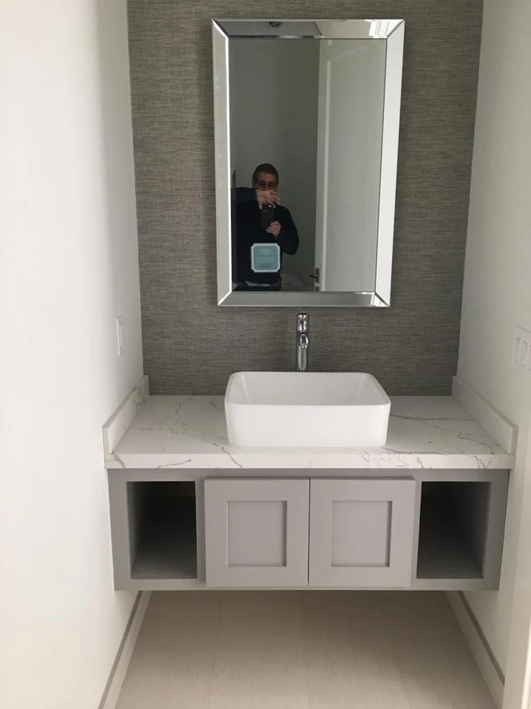
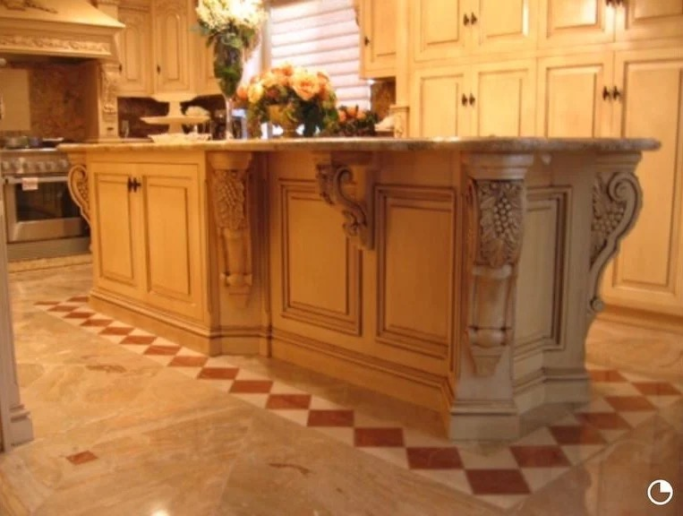
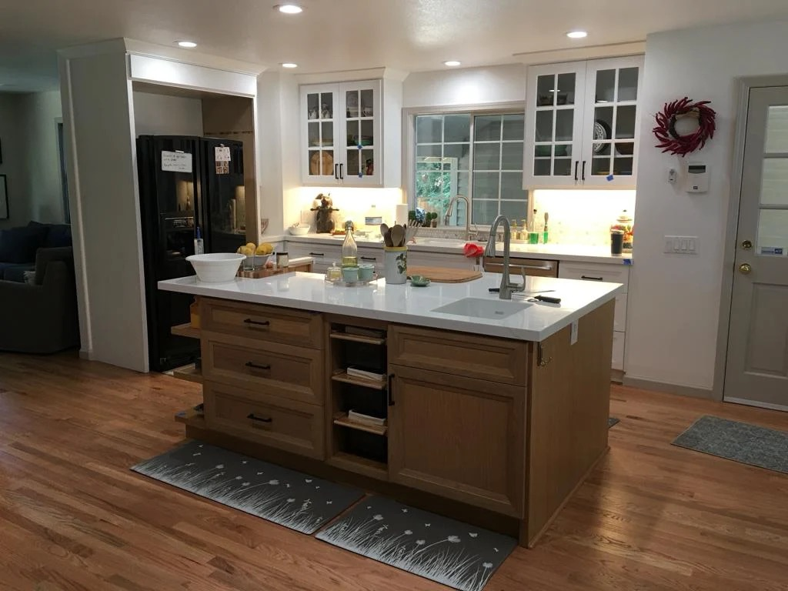
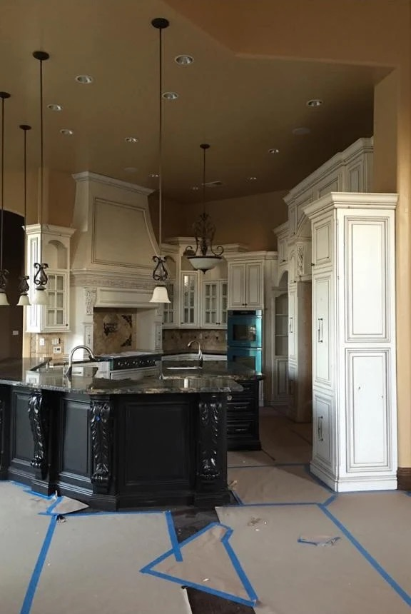
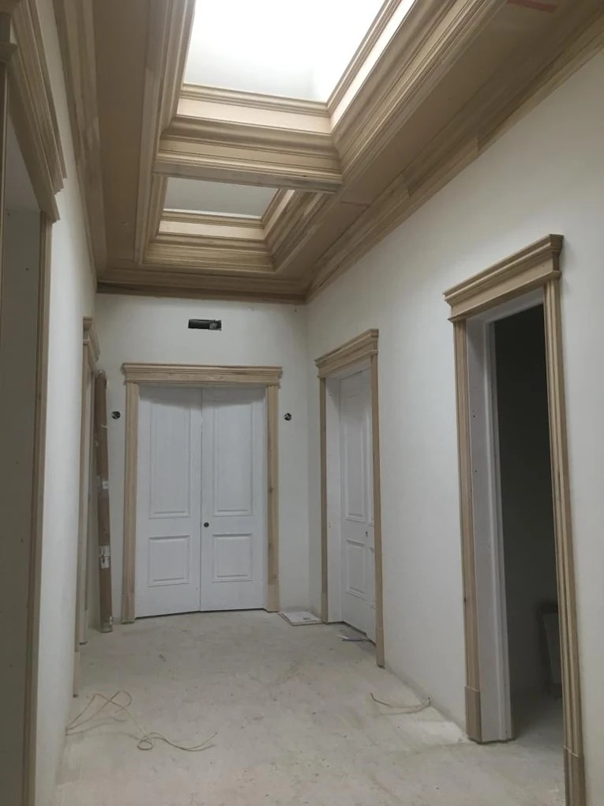

Matte-black cabinetry with plain-sawn walnut accents and honed stone. Designed for a contemporary great room.
Projects
Kitchens, baths, paneled rooms, built-ins, and specialty millwork from the Citrus Heights workshop. Project metadata is being finalized with each homeowner; locations and completion years carry "TBC" placeholders until confirmed.
Matte-black cabinetry with plain-sawn walnut accents and honed stone. Designed for a contemporary great room.

Floor-to-ceiling walnut paneling, coffered ceiling, fluted columns, custom billiards alcove.

Floor-to-ceiling arched glass cabinets framing a slab-marble island. One of the most distinctive cabinet runs in the portfolio.

Hollywood Regency dual vanity with arched mirrors and sconce-lit fluted columns.

Transitional white cabinetry, French-window display niches, marble waterfall island.

White shaker cabinetry, unlacquered brass sink, integrated appliances, plank hardwood floors.

Integrated refrigerator surround with veined slab marble backsplash and concealed-panel doors.

White vanity, marble counter, blackened hardware, wood-pattern tile wall.

Classic transitional kitchen, white marble island, black-shaded chandelier.

Floating vanity, vessel sink, marble counter, beveled framed mirror.

Cream shaker mudroom wall, integrated bench seating, full-height pantry storage.

Live-edge walnut floating shelves and reclaimed-wood bench. One-off specialty commission.

Cream-glazed Italianate cabinetry, carved corbels, marble checker floor. Earlier-era portfolio piece.

Two-tone kitchen with white upper cabinets and wood-stained base. Plank hardwood floors.

Tuscan two-tone kitchen mid-install. Cream uppers with distressed black base cabinetry.

Raw-wood door casings and coffered ceiling at framing stage. Trim package for a full-house remodel.
Most projects start with a 20-minute call to scope materials, timeline, and budget range. Phone is the fastest way to reach Felix.